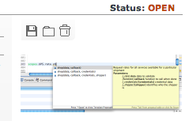
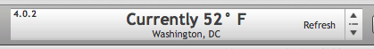

4.0.2 Release Notes
Router v2
- url now shows down to the record level
- url scheme: workspace/view/pretty-record/pk
- link directly to individual records
- google analytics tracks navigation to record level
Reporting enhancements
- report registry now takes html data and urls
- automatic converting html to our pdf previewer
- new api methods to make coding reports for the web easier
scopes.DS.print
preview (reportName,PDFByteArray)
download (reportName,PDFByteArray)
trigger (registry)
utils
convertToPDFByteArray
fromServoyForm(formName)
fromHTMLData(html)
fromHTMLURL(url)
getPDFByteArray
fromFileSystem(location)
fromMediaLibrary(location)
UI upgrades
- override servoy’s default media field controls with good looking
graphics

- new toolbar flipper graphics

- new combobox look applied to tables
Misc functionality
- fast find has new options to search on: all text, all number, all
date
Servoy 6.1.4i1
- tested and refactored for latest version of servoy: 6.1.4i1
- globals refactoring for developer builder speed
- worked with servoy on enhancements to custom api’s to make them more discoverable and usable
- inline documentation hinting while code completing
- outline view shows internal api methods
- see scopes.DS.print API for examples
New requirements